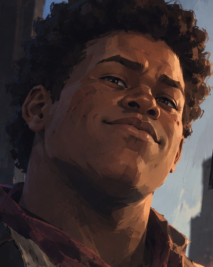

Celui qu'on sous-estime
« Mulo »
InformateurLes Freux de Van Horn

Il est jovial, bavard, d'une patience à toute épreuve, et il pose mille questions. Il a l'air de ne jamais rien comprendre à ce qui se passe autour de lui. C'est exactement ce qu'il veut vous faire croire.
On lui raconte tout, parce qu'on parle devant lui comme on parlerait devant un meuble. Il écoute, il retient, et il sait précisément quand se taire. Quand il rentre à Van Horn, il ne rapporte pas seulement les sacs et les caisses qu'on lui a collés sur le dos.
Il ne cherche ni à impressionner ni à commander. Il veut manger, garder sa place dans la bande et ne plus jamais se retrouver seul. C'est sans doute le plus attachant des Freux, et probablement le plus dangereux à sous-estimer.